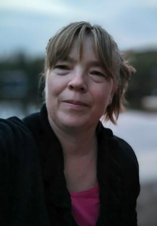

Ydinosaamiseni yhdistää tiedon, innovoinnin, tekniikan ja vuorovaikutuksen
Tiedon etsimisen ja ytimekkäästi kirjoittamisen taitoni tukevat minua dokumentoijana, viestijänä ja tutkijana.
Organisointikykyni, kokonaisuuksien hallinta, haluni ideoida ja kiinnostukseni ympärilläni tapahtuvaan auttavat minua kehittäjänä.
Tietokoneohjelmien haltuunotossa ja hyödyntämisessä nojaan tekniseen taustaani.
Vuorovaikutustaitojeni ansiosta minun on helppo lähestyä muita ja olen aidosti kiinnostunut ihmisten erilaisista tarinoista.
Tiedonjanoni markkinointia, johtamista, palvelumuotoilua sekä ihmisten ja organisaatioiden hyvinvointia kohtaan ohjaa minua kehittämään osaamistani.
Kokemusta löytyy tutkimus & kehitys ja dokumentointi tehtävistä sekä tapahtumien järjestämisestä ja auttamisesta.